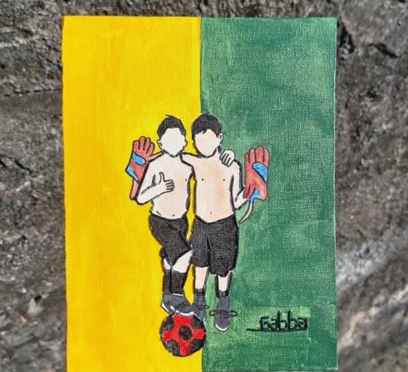
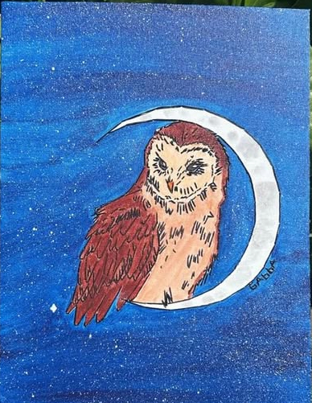
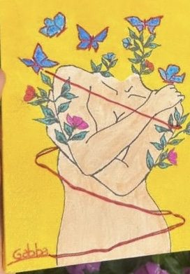
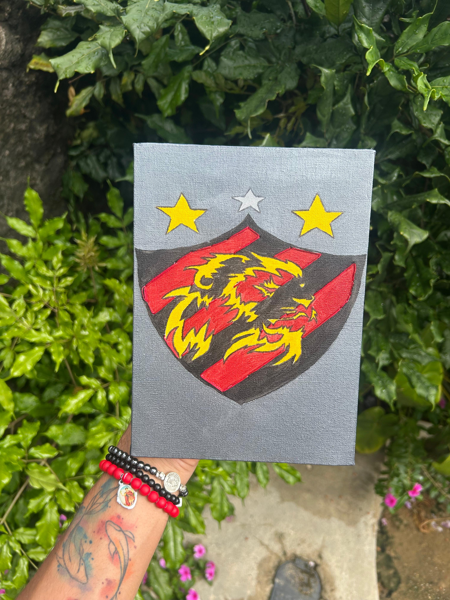

MINHAS OBRAS EM DESTAQUE
01

Retrato Jogador
Capturei da infância multiplicada por dois
02

Coruja
Coruja bordada com uma história muito especial
03

Florescer Interior
Lembrança de um poema sobre a verdadeira força
04

Sport Club do Recife
Homenagem ao time do coração
05

Amor em Quatro Patas
Quando o amor pelo companheiro de quatro patas precisa ser imortalizado
06

The Weekend
Quando uma cliente pede seu ídolo na tela, a missão é clara: capturar a essência que a faz vibrar